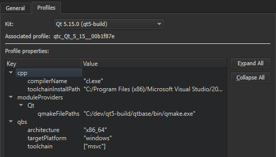
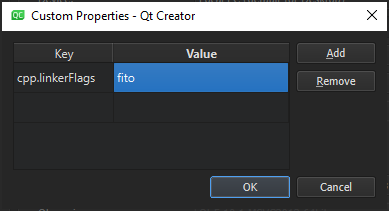

Edit Qbs profiles
To view the Qbs profile associated with a kit, select Preferences > Qbs > Profiles.

You can add keys and values to the profile or remove them from it, as well as modify existing values. For a list of available keys and values, see List of Modules in the Qbs Manual.
To edit the Qbs profile associated with a kit:
- In Preferences > Kits, select the kit, and then select Change next to the Additional Qbs Profile Settings field to open the Custom Properties dialog.

- Double-click an empty cell in the Key column to specify the key to add or modify as:
<module_name>.<property_name>. - Double-click the cell on the same row in the Value column to specify a value as a JSON literal.
- Select Add to add the key-value pair.
- Click OK.
To modify an existing value, double-click it in the Value field.
To remove the selected property, select Remove.
See also Activate kits for a project, Add kits, and Kits.